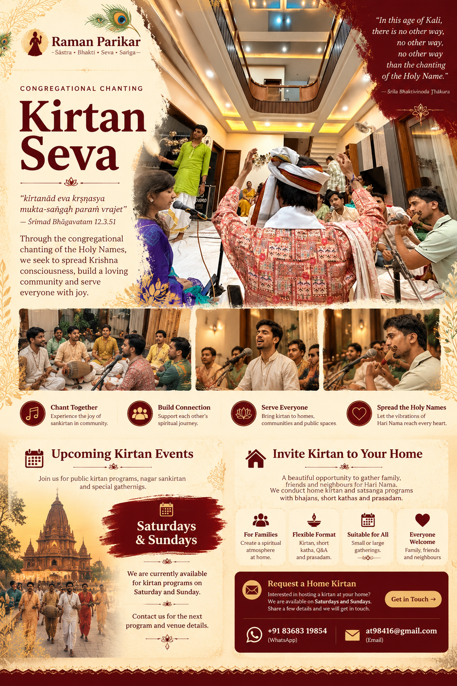

Kirtan Glimpse 1
Chanting together in devotional association.
Come together in the chanting of the Holy Names. Share devotion, build spiritual friendships and serve through kirtan.
Raman Parikar welcomes devotees and families to participate in kirtan, satsanga and devotional association.
Current availability: Saturdays and Sundays
Contact us to enquire about the next program. Dates and venues will be confirmed individually.
View and share our Kirtan Seva announcement.

Open PosterMoments of chanting, music and spiritual association from Raman Parikar.
Chanting together in devotional association.
Music, chanting and shared devotion.
Experience the joy of kirtan.
Devotional moments from our gatherings.
More glimpses of Raman Parikar kirtan.
Gather family, friends and neighbours for kirtan and spiritual association. Home kirtan requests are considered for Saturdays and Sundays, subject to confirmation.
Share a few details with Raman Parikar. We will contact you to discuss availability.